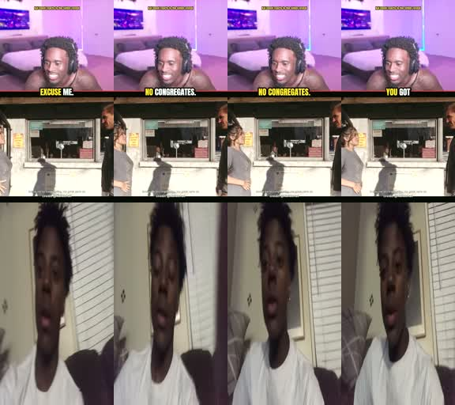

SnipNova · Editing study · 20 November 2026What happens in the first two seconds?
The three final Kai Cenat clips start with less frame-to-frame motion than any of the four viral streamer references. The difference is clearest in the father reveal. Kai stays in almost the same position while the game dialogue advances. In the IShowSpeed reference, his face changes size and position within a single shot. That gives us a concrete editing experiment: bring the revealing action or reaction forward while preserving the setup.
Watch side by side

First two seconds, sampled twice per second. Top row: SnipNova. Bottom row: IShowSpeed, 23.73 million recorded views.
Results by clip
How the release compares with your originals
The original-to-revised comparison shows fewer detected scene changes on matched moments. The final exports are different moments from one VOD, so their lower opening motion cannot be attributed to the renderer alone. Two public references also had zero detected scene changes. Adding cuts indiscriminately would miss the point.
Captions and titles under review
These flags came from the render logs. Music and game dialogue can trigger them. The out-of-range interval also means the logged seconds cannot be used as a verified missing-speech rate. None of the three has a human reference transcript.
Changes delivered and how they were checked
- Manual facecam and gameplay crops across 11 layouts. All 11 produced FFmpeg frames. Live clips can be saved with an editable source and word timings. All three original examples reached editor-ready state.
- Gold top titles with manual override or hide, grounded scene wording, yellow karaoke and optional game-word accents. The three sample titles still reuse “Kai Cenat reacts to…”. Try consequence, question and setup variants and reject titles that give away the payoff.
- Subtitle matching now suppresses matching game phrases instead of all speech in the same interval. One 57-second example retained 85 of 126 recognized words, up from 50. Correct spelling and speaker attribution need separate scoring.
- Cold-open timing follows both the teaser and full clip. A 29.51-second failure became a 59.10-second finished export. A duration check can trigger a reserve pick.
- Laugh and shout treatments have different zooms and ducked effects. Real audio/video renders covered laugh, shout and neutral treatments. Inspect whether the effect lands on the reaction.
- NVIDIA, Groq and OpenRouter passed live text probes. Forced failure exercised fallback. Local Whisper large-v3 ran offline. A typed AI editor command changed volume. The voice-separation option follows backend availability.
- The installation passed 218 checks. Release verification included 319 targeted backend and 38 frontend tests, TypeScript checking and a production build. Later focused suites overlap those totals.
What to improve first
- Opening selection. For each candidate, cut a setup-first and a reaction-first version. Have blind reviewers watch two muted seconds and describe what changed, then play six seconds with audio and identify the stakes. Keep the version with clearer action and context.
- Caption trust. Fix the coverage timebase, then manually transcribe the three exports with separate streamer and game labels. Score substitutions, insertions, deletions and wrongly attributed lines. Recheck after corrections on music-heavy scenes.
- Title variety. Compare the current three “reacts to” headlines with grounded alternatives that preserve the reveal. Score factual accuracy first, then blind preference.
- Clip finder. Add a gameplay-region visual-change signal and test it on unseen sources including quiet reactions. On four shared VODs, NeonClipping averaged 0.574 replay percentile versus 0.450 for our default and 0.549 for our challenger. The challenger slipped from 0.519 to 0.514 against the default on a separate eight-source test. Keep it opt-in.
Reading the measurements
26 public YouTube Shorts were collected. The four labelled gaming/streamer are the closest subset, including two from the same channel. Counts are collection-time snapshots. No Instagram Reels or audience-retention analytics were tested. Opening motion is mean absolute grayscale frame difference sampled at 8 fps over two seconds. A scene change crosses FFmpeg’s 0.3 threshold. Audio peaks count abrupt amplitude rises, including voices and game sounds. Rates use measured media duration. Duration, creator reach and subject differ across groups. These data describe editing and cannot predict views.
Public measurements · Originals · Revised renders · Fresh final-export measurements · OpusClip comparison